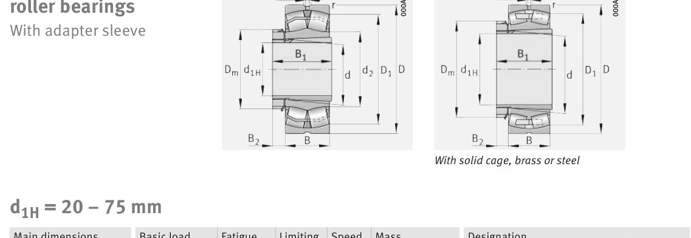

Original catalogue drawing - FAG Schaeffler HR 1, page 756

Scanned from the manufacturer catalogue page listing this part number. All part numbers printed on that table share the same drawing.
Scale cross-section
Blue = inner / outer ring, yellow = rolling element. Drawn to scale from this part's own
dimensions for selection reference only - not a manufacturing or assembly drawing.
Dimension table (mm / inch)
Symbol
Dimension
mm
inch
d
Bore diameter
60
2.3622
D
Outside diameter
130
5.1181
B
Inner-ring / bearing width
31
1.2205
r
Chamfer (min)
2.1
0.0827
Notes
Weights are given in kg. Load ratings are shown in both the original catalogue units and the converted value (1 N = 0.2248 lbf). Data is provided for selection reference only - confirm against the latest official catalogue before ordering.
Main dimensions
Bore d (mm)
60
Outside dia. D (mm)
130
Width B (mm)
31
Inner-ring shoulder dia. D1 (mm)
112.5
Load ratings & speeds
Basic dynamic load rating Cr (lbs)
47435
Basic static load rating Cor (lbs)
50807
Basic dynamic load rating Cr (N)
211000
Basic static load rating C0r (N)
226000
Fatigue limit load Cur (N)
28000
Factor e
0.23
Factor Y0
2.89
Limiting speed nG (rpm)
6,700
Reference speed nB (rpm)
4,100
Weight
Weight (kg)
1.89
Mounting dimensions (fillets / shoulders)
Housing fillet r max (mm)
2.1
Shaft shoulder da (mm)
72
Shaft shoulder db (mm)
65
Housing shoulder Da (mm)
118
Housing fillet ra max (mm)
2.1
Bearing life (ISO 281 basic rating life)
C / P
Equivalent load P (N)
L10 (106 rev)
L10h at 2,200 rpm
4
52,750
102
770
6
35,167
392
2,973
8
26,375
1,024
7,758
10
21,100
2,154
16,321
15
14,067
8,323
63,057
Basic rating life per ISO 281: L10 = (C/P)10/3 with C = 211,000 N. Hours = L10 x 106 / (60n). Life-modification factors for lubrication, contamination and temperature (aISO) are not included.
Source & traceability
Brand
FAG
Source catalogue
FAG / Schaeffler Rolling Bearings HR 1
Catalogue page
p.756 (dimensions)
Load ratings in newtons, fatigue limit load Cur, limiting speed nG and reference speed nB.
Send us the quantity you need and we will come back with price and
lead time, normally within 24 hours. Equivalent parts from other brands can be quoted at the same time.